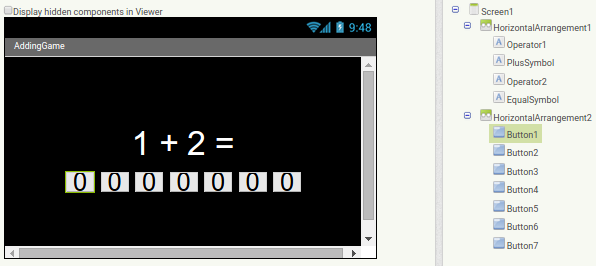
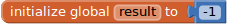
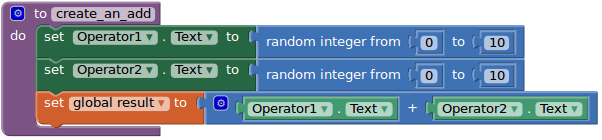
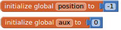
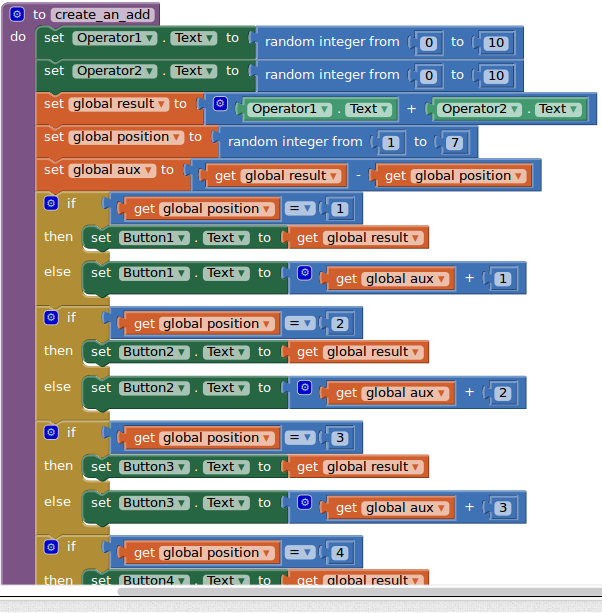
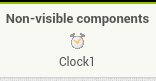
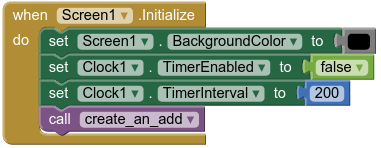
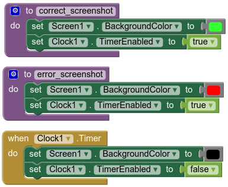
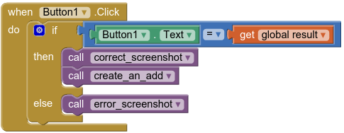

Aprendiendo a sumar
Objetivos
- Crear un pequeño juego para ensañar a sumar a niños pequeños.
Actividad
Entra en AppInventor y crea una aplicación llamada "AddingGame". Puedes usar como icono para el juego la siguiente imagen:
{kind=link}
Pon la pantalla en Horizontal y con fondo negro.
Ahora crea un "HorizontalArrangement" con las etiquetas necesarias y un "HorizontalArrangement" con los botones necesarios para que te quede algo parecido a la imagen siguiente. Para aclararte en el desarrollo de los programas debes renombrar los componentes y asignar unos valores iniciales a las etiquetas y botones que ya cambiaremos más adelante. Debe quedar más o menos así:

Vamos a programar al apartado "Blocks".
Tendremos una variable "result" que permitirá almacenar el resultado para comprobar si es correcta la opción que elegimos y para calcular el rango de valores a mostrar.

Como vamos a tener que repetir varias veces las instrucciones de crear una suma al azar y calcular su resultado, vamos a crear un procedimiento que se encargue de ésto (en el panel "Blocks" tienes la categoría "Procedures"):
Ésta podría ser una primera versión para ese procedimiento, pero también vamos a tener que elegir muchas veces qué valores colocamos en los botones de abajo para que el usuario elija su opción-resultado. Es más, vamos a tener que elegirlos cada vez que creamos una suma, así que vamos a ampliar el procedimiento anterior para que también se encargue de eso. Necesitaremos alguna variable más. Debería quedar así:
 
Lo que continua es repetitivo hasta el "Button7", así que eso lo escribes tú.
Ahora en la vista "Designer" añadimos a la aplicación un "Clock". que solo nos va a servir para poder temporizar un pantallazo de colores.

Cuando iniciamos nuestra aplicación, lo primero a realizar será establecer el color de fondo y fijar el cronómetro para los pantallazos de color (para los aciertos y fallos), por último llamar al procedimiento "create_an_add".

Vamos a analizar ahora el comportamiento de nuestro juego: cuando pulses un botón eligiendo un resultado, se debe comprobar si el valor de ese botón es el de la variable "result". Si lo es, entonces damos un pantallazo verde (cambiar el fondo a verde y luego a negro) y llamamos al procedimiento "create_an_add" para que cree una nueva suma. Por contra, sino lo es ,damos un pantallazo rojo y nos quedamos esperando a que lo acierte.
Para cualquier botón que elija el resultado debemos usar las mismas instrucciones. Para no ser repetitivos vamos a crear unos procedimientos "correct_screenshot" y "error_screenshot" que combinados con el temporizador serán los encargados de dar los pantallazos de color según hallamos acertado o fallado:

Para acabar nuestro juego, falta programar los eventos asociados a los botones de elección del resultado, pero con todo lo anterior son muy fáciles. Te pongo el asociado a "Button1":

Lo de los otros seis botones lo pones tú.
Y una vez los tengas, ya puedes probar nuestro programa... ¿sabes sumar?
Ampliación
Modifica el programa anterior para incluir:
- Un selector de dificultad, por ejemplo con tres niveles:
- 0 - sumas de números del 0 al 10
- 1 - Sumas de números del 0 al 100
- 2 - Sumas de números del 0 al 1000
- Unos contadores de aciertos y fallos, inicializados a 0 y que van incrementándose conforme el programa va avanzando.
Obra publicada con Licencia Creative Commons Reconocimiento No comercial Compartir igual 3.0

Programando en AppInventor por Francisco Nevado Montero se distribuye bajo una Licencia Creative Commons Atribución-NoComercial-CompartirIgual 4.0 Internacional.